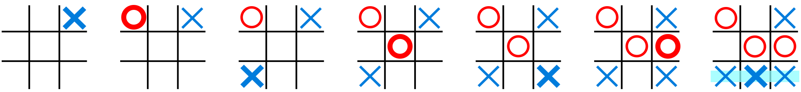

Tic-Tac-Toe is played on a 3*3 grid by 2 Players, Who alternately place the marks (X) and (O) in one of the nine spaces in the grid.
In the following example, the first player (X) wins the game in seven steps:-
There is no universally agreed rule as to who plays first, but in this article the convention that (X) plays first is used. Players soon discover that the best play from both parties leads to a draw. Hence, Tic-Tac-Toe is often played by young children who may not have discovered the optimal strategy. Because of the simplicity of Tic-Tac-Toe, It is often used as a pedagogical tool for teaching the concepts of good sportsmanship and the branch of artificial intelligence that deals with the searching of game trees. It is straight forward to write a computer program to play Tic-Tac-Toe perfectly or to enumerate the 765 essentially different positions (the state space complexity) or the 26,830 possible games up to rotations and reflections (the game tree complexity) on this space. If played optimally by both players, the game always ends in a draw, making tic-tac-toe a futile game.
The game can be generalized to an m,n,k-game, in which two players alternate placing stones of their own color on an m-by-n board with the goal of getting k of their own color in a row. Tic-tac-toe is the 3,3,3-game. Harary's generalized Tic-Tac-Toe is an even broader generalization of Tic-Tac-Toe. It can also be generalized as an nd game, specifically one in which n equals 3 and d equals 2. It can be generalised even further by playing on an arbitrary incidence structure, where rows are lines and cells are points. Tic-Tac-Toe's incidence structure consists of nine points, three horizontal lines, three vertical lines, and two diagonal lines, with each line consisting of at least three points.
A Minimax algorithm is a recursive algorithm for choosing the next move in an n-player game, usually a two-player game. A value is associated with each position or state of the game. This value is computed by means of a position evaluation function and it indicates how good it would be for a player to reach that position. The player then makes the move that maximizes the minimum value of the position resulting from the opponent's possible following moves. If it is A's turn to move, A gives a value to each of their legal moves.
A possible allocation method consists in assigning a certain win for A as +1 and for B as −1. This leads to combinatorial game theory as developed by J.H. Conway. An alternative is using a rule that if the result of a move is an immediate win for A it is assigned positive infinity and if it is an immediate win for B, negative infinity. The value to A of any other move is the minimum of the values resulting from each of B's possible replies. For this reason, A is called the maximizing player and B is called the minimizing player, hence the name minimax algorithm. The above algorithm will assign a value of positive or negative infinity to any position since the value of every position will be the value of some final winning or losing position. Often this is generally only possible at the very end of complicated games such as chess or go, since it is not computationally feasible to look ahead as far as the completion of the game, except towards the end, and instead, positions are given finite values as estimates of the degree of belief that they will lead to a win for one player or another.
(CEO & Founder)
Graduated from the British Univercity In Egypt
+201xxxxxxxxxxx
(Co-Founder)
Graduated from the British Univercity In Egypt
+201xxxxxxxxxxx
(Manager)
Graduated from the British Univercity In Egypt
+201xxxxxxxxxxx